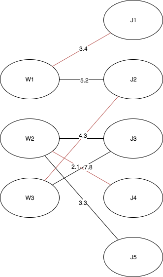

Simulated annealing for weighted directed graph assignment problem
Problem statement
The assignment problem is commonly explained with an example - as a problem of finding optimal allocation of \(n\) workers over \(m\) jobs. Two different workers cannot be allocated over the same job and one worker cannot be do more than one job. Each assignment of a worker to a job has defined its cost / profit \(c\). The goal of the task is to minimize the total cost or maximize the total profit \(U\). Depending on the cardinality of both sets, different models can be considered:
if no. of workers exceeds no. of jobs: \(n \ge m\)
The problem can be presented graphically as follows:
Workers - jobs allocation
Goals
Design and implement a program solving simulated anneling algorithm,
Test various temperature ranges,
Test different temperature cooling schedules:
exponential: \(T(t) = T_0 * a ^ t\)
linear: \(T(t) = T_0 + a * t\)
logarithmic: \(T(t) = c / log(t + d)\)
Test graphs of different sizes and structures \(n \gt m\), \(n = m\), \(n \lt m\),
Visualize learning performance.
Solution concept
Assumptions
Edge costs are held in two dimensional table, where the first dimension denotes vertex indices from bipartite graph part with lower cardinality (LP) and the second indices from part of higher cardinality (HP).
The graph is a complete bipartite one. Edges missing in input file are replaced with \(+inf\) weights (for minimization problem, \(-inf\) weights in case of maximization).
\(x\) is represented by a permutation of vertex indices \(\in HP\):
Neighbour \(x\) is computed by choosing a random index from solution \(\in HP\) and replacing it by other random index \(\in HP\). No matter if it is in the solution or in the remaining set.
Algorithm
\(t = t_{max}\) choose random \(x_{current}\)
choose \(x_{next}\) from \(x_{current}\) neighbourhood if \(U(x_{next})\) is better than \(U(x_{current})\) than \(x_{current}:=x_{next}\) else if \(rand(0,1) > e^{-\delta U/t}\) than \(x_{current}:=x_{next}\) repeat step 2. \(k_t\) times
t = T(t) if \(t \gt t_{min}\) then goto step 2. else goto step 1.